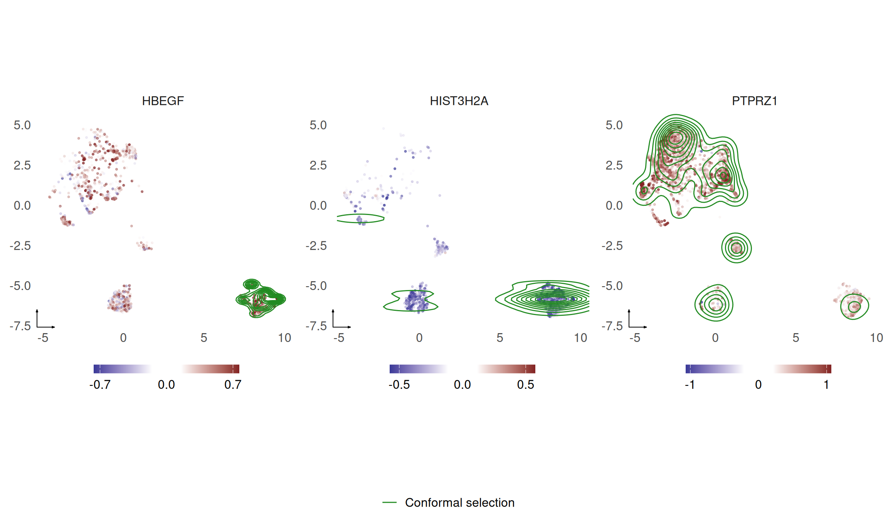
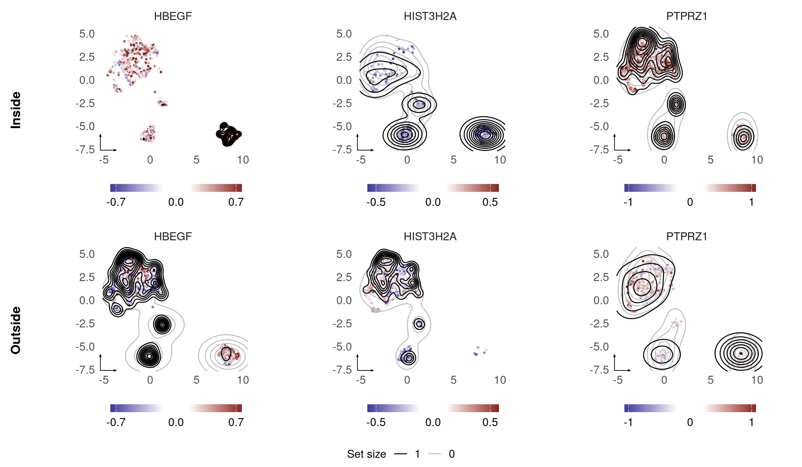

conformeR-introduction.RmdLEMUR fits a low-dimensional embedding and assigns each
cell to a neighborhood when they share a similar response to a
given contrast and gene. Because this assignment is itself the output of
a fitted model, it inherits sampling variability: refit the model on a
slightly different draw of cells, and the neighborhood boundaries shift.
conformeR wraps this neighborhood construction step in a
conformal prediction layer so that this variability can be quantified
rather than ignored.
It provides two complementary views of that uncertainty:
Why this matters. A single LEMUR fit gives you one
particular neighborhood assignment, with no way to tell how much of it
would survive resampling. conformeR turns that single
assignment into a statement with a formal, finite-sample coverage
guarantee.
The coverage guarantees behind conformal prediction are proven under the assumption that the training and calibration sets carry the true neighborhood label for each cell. That assumption is exactly what motivates reaching for conformal prediction here in the first place — but it is also never satisfied in practice: we do not observe the true neighborhood membership of any cell. What we have instead is LEMUR’s own predicted neighborhood assignment, which we use as a proxy label for both training and calibration. That proxy is a noisy version of the true label, and the two conformal procedures degrade differently under that noise:
Practical takeaway. Read a size-2 prediction set from conformal clustering as the procedure protecting itself against label noise, not as evidence that a cell has no meaningful neighborhood. Read a conformal selection result with an eye on LEMUR fit quality first — e.g. convergence diagnostics, embedding dimensionality — since that fit stands in for ground truth throughout.
knitr::opts_chunk$set(warning = FALSE, message = FALSE)
if (!requireNamespace("conformeR", quietly = TRUE)) {
devtools::install_github("https://github.com/juslecl/conformeR")
}
library(conformeR)
library(dplyr)
library(ggplot2)
library(tibble)
library(knitr)We use a consistent, minimal theme throughout the vignette so that
the conformeR plots line up visually with the tables:
theme_set(
theme_minimal(base_size = 13) +
theme(
panel.grid.minor = element_blank(),
plot.title = element_text(face = "bold"),
legend.position = "bottom"
)
)
conformer_palette <- c("inside" = "#4472A8", "outside" = "#D9822B", "none" = "#B0B0B0")This vignette runs conformeR on a reduced version of the
single-cell RNA-seq dataset from Zhao, Dovas, Spinazzi, et al. (2021),
“Deconvolution of cell type-specific drug responses in human tumor
tissue with single-cell RNA-seq,” published in Genome
Medicine (GEO accession GSE148842). As with any input
to conformeR, the data have already been preprocessed and
quality-checked upstream.
data("sce_vignette")
sce_vignette
#> class: SingleCellExperiment
#> dim: 3000 10000
#> metadata(0):
#> assays(2): counts logcounts
#> rownames(3000): ENSG00000118785 ENSG00000210082 ... ENSG00000100139
#> ENSG00000188229
#> rowData names(2): gid gene
#> colnames(10000): cell 67764 cell 9225 ... cell 26100 cell 18997
#> colData names(3): cell_type condition patient_id
#> reducedDimNames(0):
#> mainExpName: NULL
#> altExpNames(0):
rownames(sce_vignette) <- rowData(sce_vignette)$gene
head(colData(sce_vignette))
#> DataFrame with 6 rows and 3 columns
#> cell_type condition patient_id
#> <character> <character> <character>
#> cell 67764 Myeloid cells ctrl PW034
#> cell 9225 Tumor cells ctrl PW030
#> cell 16771 Myeloid cells ctrl PW030
#> cell 68550 Myeloid cells ctrl PW034
#> cell 76008 Myeloid cells ctrl PW034
#> cell 19112 Tumor cells ctrl PW030We restrict the analysis to three genes with distinct expected
behavior, to illustrate a range of neighborhood sizes and uncertainty
patterns: HIST3H2A, PTPRZ1, and
HBEGF.
pan_affect_genes <- rowData(sce_vignette) %>%
as_tibble() %>%
dplyr::select(gid, gene) %>%
filter(gene %in% c("HIST3H2A", "PTPRZ1", "HBEGF"))
kable(pan_affect_genes, caption = "Genes of interest for this vignette")| gid | gene |
|---|---|
| ENSG00000106278 | PTPRZ1 |
| ENSG00000113070 | HBEGF |
| ENSG00000181218 | HIST3H2A |
conformeR() fits LEMUR and layers both
conformal procedures on top of it in one call. The key arguments
are:
design_lemur — the LEMUR design formula; here we adjust
for patient_id and estimate the effect of
condition.contrast_column — which column of the design defines
the contrast of interest.genes_of_interest — restrict the (more expensive)
conformal layers to a gene subset; LEMUR itself is still fit
genome-wide.what — which conformal procedure(s) to run:
"conf_selection", "conf_clustering", or
both.By default the target coverage is cp_alpha, and the data
are split 50% training / 50% calibration+test, with the calibration set
taking 25 percentage points of the total (cp_train_frac and
cp_cal_frac override these proportions).
For each gene, conformal selection returns the set of cells flagged
as belonging to the neighborhood affected by condition, at
the target coverage level. The table below reports both the raw
neighborhood size and its share of all cells in the fitted
embedding.
selection_summary <- res$conf_results |>
group_by(gene) |>
summarize(
`Neighborhood size` = sum(inside_cs),
`% of cells` = round(sum(inside_cs) / ncol(res$fit_lemur), 2) * 100,
.groups = "drop"
)
kable(selection_summary, caption = "Conformal selection: neighborhood size per gene")| gene | Neighborhood size | % of cells |
|---|---|---|
| HBEGF | 154 | 3 |
| HIST3H2A | 374 | 7 |
| PTPRZ1 | 2763 | 55 |
A larger % of cells means the gene’s condition effect is
detected across a broader swath of the embedding; a small, tight
neighborhood points to a more localized effect.
Conformal clustering instead reports, per cell, a prediction set: the neighborhoods that cell could plausibly belong to at the target coverage. A prediction set of size zero means the procedure could not confidently assign that cell to any neighborhood; larger sets reflect more ambiguous cells.
clustering_summary <- res$conf_results |>
group_by(gene) |>
summarize(
`Prediction set = inside` = sum(inside_cc + outside_cc ==1 & inside_cc == 1),
`Prediction set = outside` = sum(inside_cc + outside_cc ==1 & outside_cc == 1),
`Prediction set size 2` = sum(inside_cc + outside_cc !=1),
.groups = "drop"
)
kable(clustering_summary, caption = "Conformal clustering: prediction set composition per gene")| gene | Prediction set = inside | Prediction set = outside | Prediction set size 2 |
|---|---|---|---|
| HBEGF | 551 | 4198 | 252 |
| HIST3H2A | 1715 | 3005 | 281 |
| PTPRZ1 | 3728 | 986 | 287 |
Reading this table alongside the selection table above shows where the two procedures agree (a gene with a large, confident neighborhood in both) and where they diverge (a gene with a sizeable selected neighborhood but many size-2 or ambiguous cells under clustering, which flags instability worth a closer look). Recall from the caveat above that a high count of size-2 sets is, by design, the clustering procedure’s response to calibrating against LEMUR’s noisy neighborhood labels rather than the true ones — so treat it as a built-in conservatism, not necessarily a sign that something is wrong with the gene’s effect.
plotter_conformal_selection(res, pan_affect_genes$gene)
Conformal selection overlaid on LEMUR neighborhoods, one panel per gene.
Cells shaded as part of the selected neighborhood are those the procedure can confidently attribute to the condition effect for that gene; unshaded cells fall outside the guaranteed selection at the chosen coverage level.
plotter_conformal_clustering(res, pan_affect_genes$gene)
Conformal prediction sets overlaid on LEMUR neighborhoods, one panel per gene.
Here color reflects the prediction set itself rather than a single hard assignment, making it easy to spot the boundary regions where neighborhood membership is genuinely uncertain versus the core regions where every resampling agrees.
sessionInfo()
#> R version 4.5.2 (2025-10-31)
#> Platform: x86_64-pc-linux-gnu
#> Running under: Ubuntu 24.04.3 LTS
#>
#> Matrix products: default
#> BLAS: /usr/lib/x86_64-linux-gnu/openblas-pthread/libblas.so.3
#> LAPACK: /usr/lib/x86_64-linux-gnu/openblas-pthread/libopenblasp-r0.3.26.so; LAPACK version 3.12.0
#>
#> locale:
#> [1] LC_CTYPE=en_US.UTF-8 LC_NUMERIC=C
#> [3] LC_TIME=en_US.UTF-8 LC_COLLATE=en_US.UTF-8
#> [5] LC_MONETARY=en_US.UTF-8 LC_MESSAGES=en_US.UTF-8
#> [7] LC_PAPER=en_US.UTF-8 LC_NAME=C
#> [9] LC_ADDRESS=C LC_TELEPHONE=C
#> [11] LC_MEASUREMENT=en_US.UTF-8 LC_IDENTIFICATION=C
#>
#> time zone: Etc/UTC
#> tzcode source: system (glibc)
#>
#> attached base packages:
#> [1] stats4 stats graphics grDevices utils datasets methods
#> [8] base
#>
#> other attached packages:
#> [1] knitr_1.51 tibble_3.3.1
#> [3] ggplot2_4.0.3 dplyr_1.2.1
#> [5] conformeR_0.0.0.9000 SingleCellExperiment_1.32.0
#> [7] SummarizedExperiment_1.40.0 Biobase_2.70.0
#> [9] GenomicRanges_1.62.1 Seqinfo_1.0.0
#> [11] IRanges_2.44.0 S4Vectors_0.48.1
#> [13] BiocGenerics_0.56.0 generics_0.1.4
#> [15] MatrixGenerics_1.22.0 matrixStats_1.5.0
#>
#> loaded via a namespace (and not attached):
#> [1] tidyselect_1.2.1 farver_2.1.2 S7_0.2.2
#> [4] fastmap_1.2.0 digest_0.6.39 lifecycle_1.0.5
#> [7] statmod_1.5.2 lemur_1.8.0 magrittr_2.0.5
#> [10] compiler_4.5.2 rlang_1.3.0 sass_0.4.10
#> [13] tools_4.5.2 yaml_2.3.12 labeling_0.4.3
#> [16] S4Arrays_1.10.1 htmlwidgets_1.6.4 DelayedArray_0.36.1
#> [19] RColorBrewer_1.1-3 BiocParallel_1.44.0 abind_1.4-8
#> [22] withr_3.0.3 purrr_1.2.2 desc_1.4.3
#> [25] grid_4.5.2 beachmat_2.26.0 future_1.75.0
#> [28] edgeR_4.8.2 MASS_7.3-65 globals_0.19.1
#> [31] scales_1.4.0 isoband_0.3.0 cli_3.6.6
#> [34] rmarkdown_2.31 ragg_1.5.2 otel_0.2.0
#> [37] rstudioapi_0.19.0 RSpectra_0.16-2 glmGamPoi_1.22.0
#> [40] cachem_1.1.0 splines_4.5.2 parallel_4.5.2
#> [43] XVector_0.50.0 vctrs_0.7.3 Matrix_1.7-4
#> [46] jsonlite_2.0.0 irlba_2.3.7 listenv_1.0.0
#> [49] systemfonts_1.3.2 locfit_1.5-9.12 ggnewscale_0.5.2
#> [52] harmony_1.2.3 limma_3.66.0 jquerylib_0.1.4
#> [55] tidyr_1.3.2 glue_1.8.1 parallelly_1.48.0
#> [58] pkgdown_2.2.0 codetools_0.2-20 cowplot_1.2.0
#> [61] uwot_0.2.4 RcppAnnoy_0.0.23 rsample_1.3.2
#> [64] gtable_0.3.6 pillar_1.11.1 furrr_0.4.0
#> [67] htmltools_0.5.9 R6_2.6.1 textshaping_1.0.5
#> [70] sparseMatrixStats_1.22.0 evaluate_1.0.5 lattice_0.22-7
#> [73] RhpcBLASctl_0.23-42 bslib_0.11.0 Rcpp_1.1.1-1.1
#> [76] SparseArray_1.10.10 xfun_0.59 fs_2.1.0
#> [79] pkgconfig_2.0.3